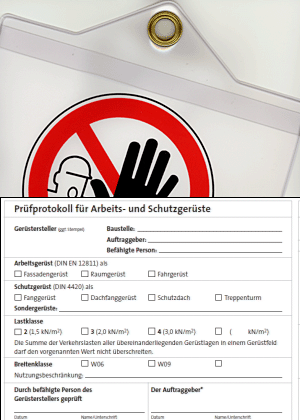

Nachweis der Fertigstellung
Ein Nachweis der endgültigen Fertigstellung kann das am Gerüst angebrachte
- Prüfprotokoll des Gerüsterstellers bei gleichzeitiger Aufhebung der Sperrung sein.


Ein Nachweis der endgültigen Fertigstellung kann das am Gerüst angebrachte